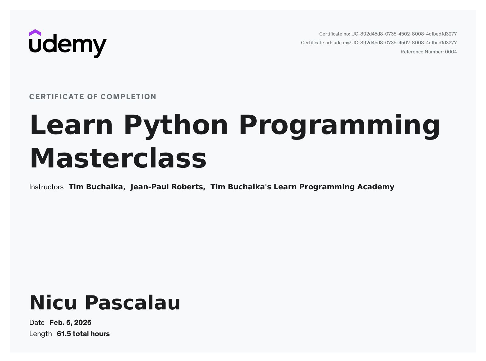

First name: Nicu
Last name: Pascalau
Highly motivated engineer designer for building services, considering a general purpose - as constant improvments over effiency and sustenabilty. With recent desire to combine fields of knowledge over tech solutions, in ascending to become a Fullstack developer. Looking for a challenging position as an entry to this field.
Education:
- High School "Gelu Voievod" - started from 2002 - ended in 2006
- Technical University of Cluj-Napoca - Faculty of Building Services Engineering - started from 2013 - ended in 2017
Work experience:
- Project desinger position at s.c. Caloria s.r.l. - water systems, HVAC systems
- started in 2017 - ended in 2019
- Position occupied - Project designer
Work experience:
- Project desinger position at s.c. Conserd Project s.r.l. - water systems, HVAC systems
- started in 2019 - ended in 2024
- Position occupied - Project designer in firm & technical analyst
on external contracts of the firm
Skills and Hobbies:
Microsoft office suite, AutoCad, Urbano, AquaCad and DrainCad
Organized in setting essential tasks for a good flow of completion
Collaborative in teams, binder to solutions and suggestions of colegues.
Result over arrogance driven.
Languages: Native Romanian, Proeficient English, Italian - Spanish - medium
Lover of: fun/kind people, karaoke, improv and south american dances styles (salsa, bachata, kizomba, semba, etc.)
Recent skills aquired and further objectives:
Python Mastering Course Class online - instructors: Tim Buchalka, Jean-Paul Roberts
On going projects and online courses:
- The complete Full-stack Web Development - lead by Dr. Angela Yu
- DevOps Beginners to Advanced - lead by Imran Teli
- Complete React, Next.js and Typescript projects - lead by John Smilga
- Learn to Code with Rust - lead by Boris Paskhaver
Contact: nicu.pascalau_c@yahoo.com